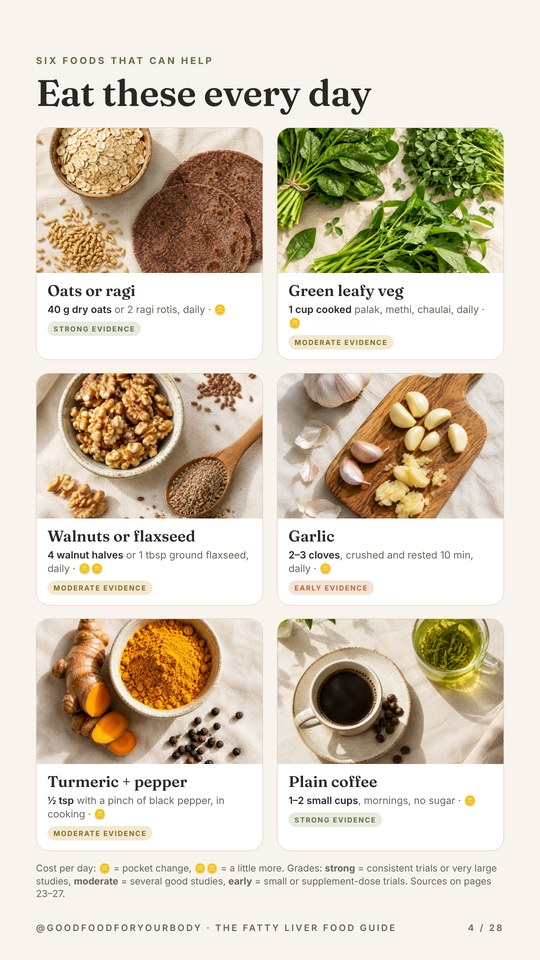
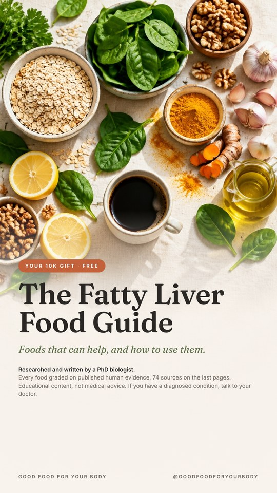
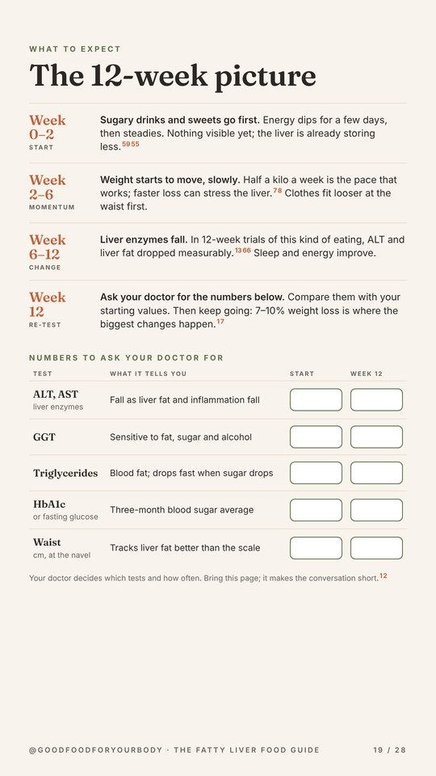
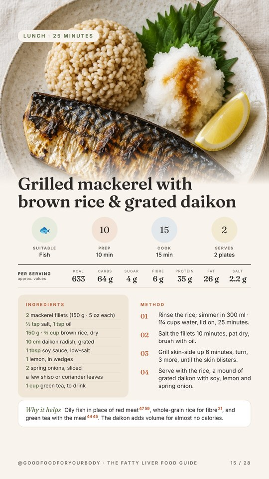

The free Fatty Liver Food Guide: the 6 foods with doses, what to limit, 8 easy recipes, a 7-day plan, and a 12-week tracker for your blood test results.



This guide answers exactly that: which foods, how much, how often, graded on published human studies, with recipes you can cook from what's in your market.
